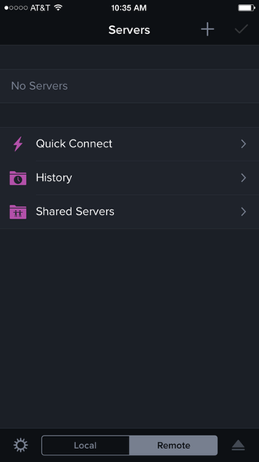
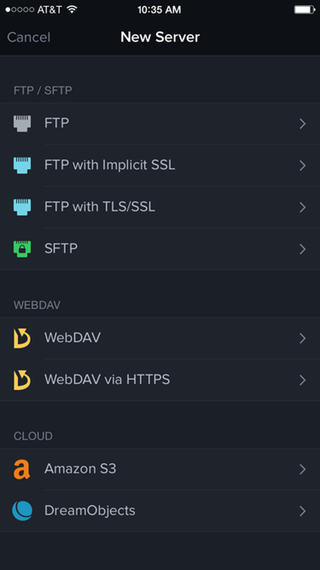
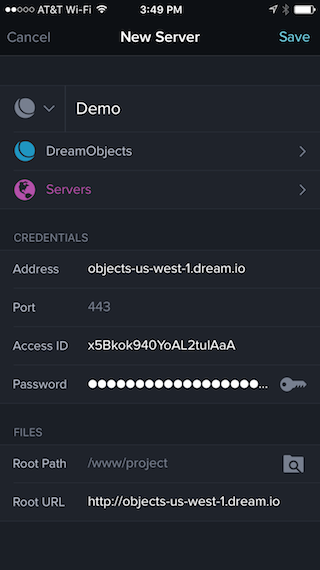
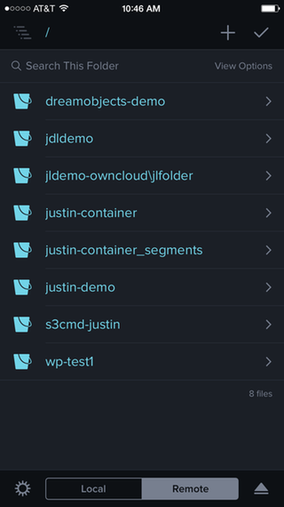
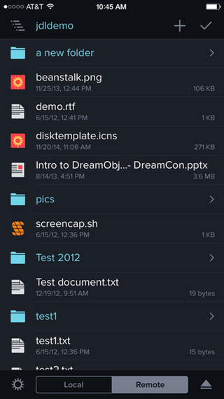

How to Use Transmit iOS with DreamObjects
Overview
Transmit iOS is an FTP client for iOS devices (iPhone or iPad). Developed by Panic, it also includes capabilities to mount SFTP, Amazon S3, and WebDAV connections. The client must be purchased in the Apple App store and includes many features, including the capability of mounting the DreamObjects protocol natively.
Visit the following pages for further details:
Using Transmit for iOS with DreamObjects
Before you begin, make sure you already have a DreamObjects bucket created.
Launch the Transmit app.
Click the plus (+) button in the top-right corner.
Select DreamObjects from the New Server list under the Cloud section.
Enter your Access ID and Secret Key as well as the Root URL, and then tap Save.
Note
Visit the DreamObjects key guide for instructions on how to find your access and secret keys.
- Connect to DreamObjects.
Your buckets display when you connect to DreamObjects:
The contents display when you tap a bucket:
